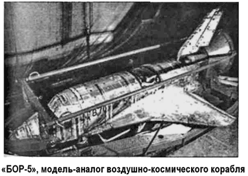
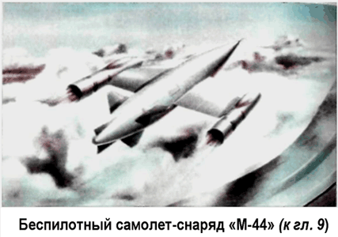
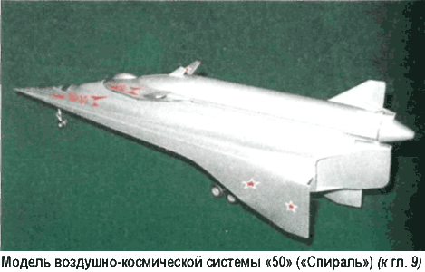
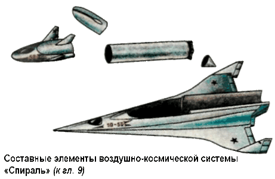

Полеты «БОР-5»
С июня 1983 года начались запуски летающей лаборатории «БОР-5», которая являлась геометрически подобной моделью «Бурана», выполненной в масштабе 1:8.
«БОР-5» создавался для достижения следующих целей: определение аэродинамических и балансировочных характеристик, продольной, боковой и поперечной устойчивости в условиях реального полета, исследование распределения давления по поверхности аппарата, определение тепловых и акустических нагрузок, проверка достоверности методов аэродинамического расчета Ввиду того, что для получения требуемого аэродинамического подобия при полете в атмосфере скоростной напор был значительно выше, чем при полете орбитального корабля «Буран», и температура поверхности превышала возможности плиточной теплозащиты, на аппаратах «БОР-5» применялась традиционная «уносимая» абляционная теплозащита на основе минерального стеклопластика.
Как и в случае «БОРа-4», управление лабораторией «БОР-5» вне атмосферы осуществлялось газореактивными соплами, а в атмосфере — рулевыми поверхностями самолетного типа Телеметрическая система «БОРа-5» записывала в запоминающее устройство и передавала на Землю информацию от нескольких блоков акселерометров, датчиков угловых скоростей, свободных гироскопов, датчиков давления, отклонения элевонов и руля направления и аппаратуры измерения шарнирных моментов на рулях. Она же собирала информацию от термопар, калориметрических и других температурных датчиков; использовались также термокраска и индикаторы плавления.

Аппараты «БОР-5» изготавливались на Электромеханическом заводе имени Мясищева при участии специалистов ЛИИ и НПО «Молния».
«БОР-5» запускались все той же ракетой-носителем «К65М-РБ5» с космодрома Капустин Яр, но летели по суборбитальной траектории в направлении озера Балхаш. Ракета с аппаратом массой 1450 килограммов достигала максимальной высоты около 210 километров, после чего происходило разделение, и «БОР-5» продолжал полет по баллистической кривой со скоростью примерно 5 км/с. В атмосфере, с высоты около 50 километров, полет проходил с программным изменением углов крена и атаки по траектории, соответствующей траектории «Бурана».
Дальность полета аппарата «БОР-5» от точки старта ракеты до приземления составляла около 2000 километров; с высоты 7–8 км он тормозился по крутой спирали, на высоте 3 км выпускался парашют, на котором аппарат приземлялся с вертикальной скоростью 7 м/с.
С 6 июля 1984 года по 27 июля 1988 года было проведено пять запусков аппаратов «БОР-5», причем первые два по программе летно-конструкторских испытаний доработанной ракеты-носителя.
При первом пуске из-за электрического дефекта аппарат и ракета не разделились и упали на землю вместе. Второй и последующие полеты прошли нормально. Три зачетных пуска по программе испытаний «БОР-5» прошли удачно и дали необходимую информацию.
Постепенное свертывание, а затем и полное закрытие программы «Буран» не позволили провести интересные эксперименты по радиосвязи на плазменном участке спуска в атмосфере, для чего на базе «БОР-4» был изготовлен аппарат «БОР-6». Эту новую модель планировалось снабдить спциальными охлаждаемыми антеннами, вынесенными в набегающий поток.


